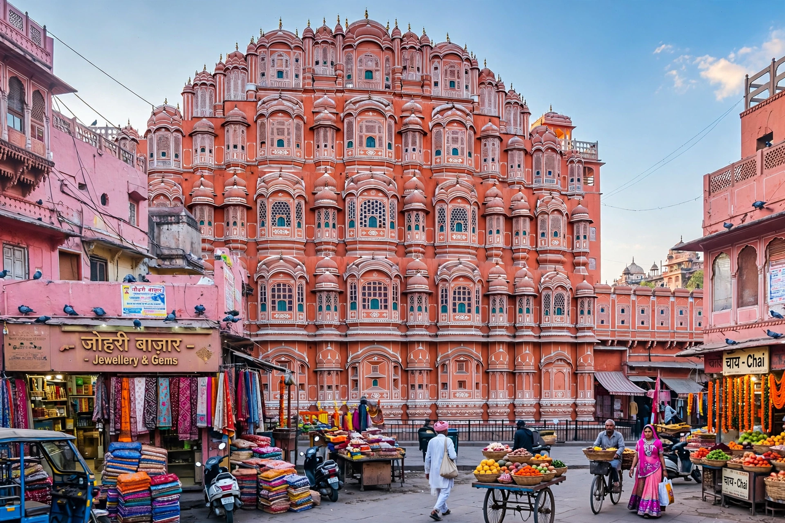

Wikipedia — the free encyclopedia

| Country | India |
| State | Rajasthan |
| Founded | 1727 by Maharaja Sawai Jai Singh II |
| Nickname | The Pink City |
Jaipur is the capital and largest city of the Indian state of Rajasthan. Founded in 1727 by Maharaja Sawai Jai Singh II of Amber, it was one of India's first planned cities, laid out on a grid according to Vastu shastra principles. In 1876 the city was painted terracotta pink to welcome the Prince of Wales, giving it the name "Pink City".
The Hawa Mahal (1799), a five-storey facade of latticed windows for royal women to observe the street; the City Palace; Jantar Mantar, Jai Singh's great masonry observatory (a UNESCO site); and the Amber Fort on the hills to the north. With Delhi and Agra, Jaipur forms the Golden Triangle tourist circuit. Its historic city was inscribed by UNESCO in 2019.